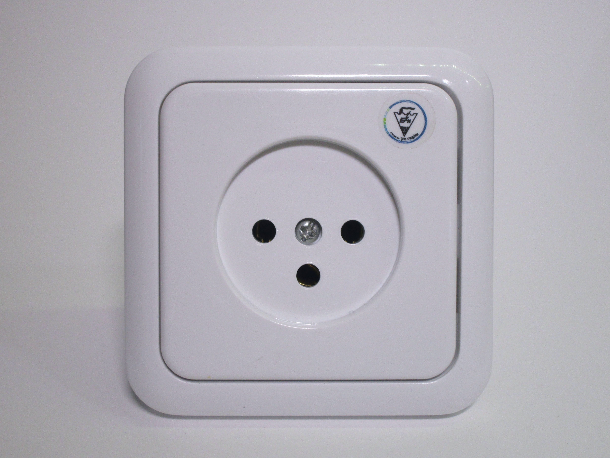
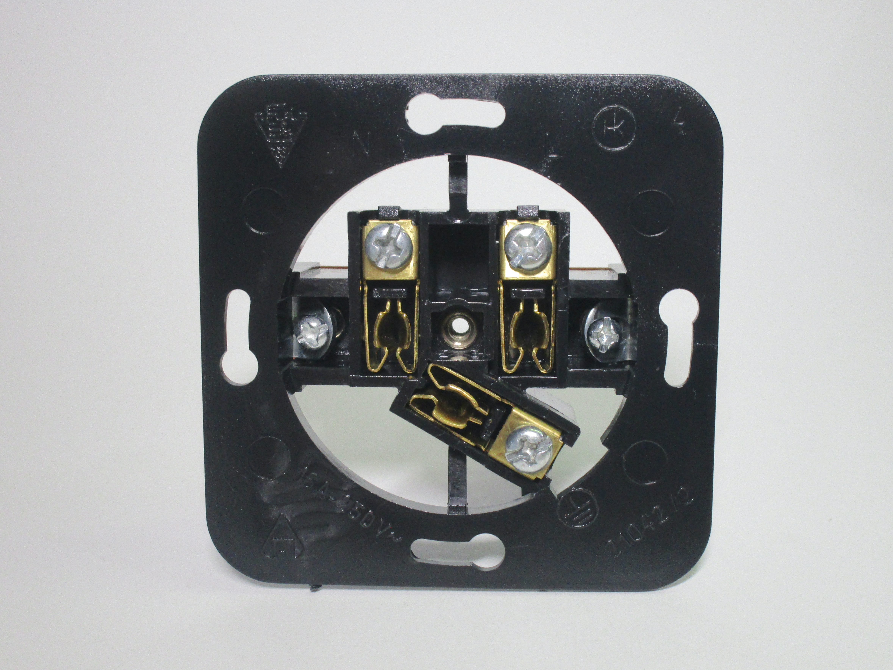
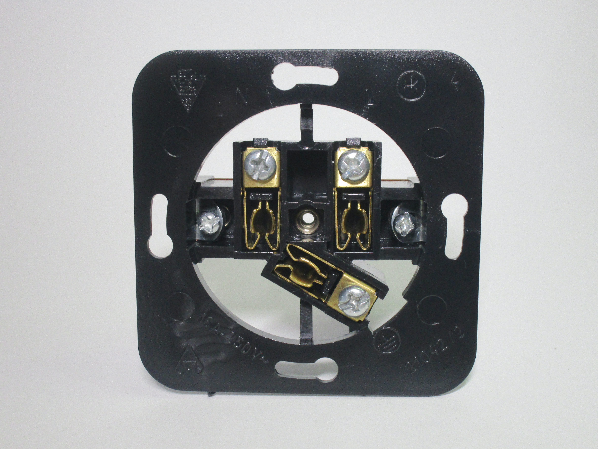
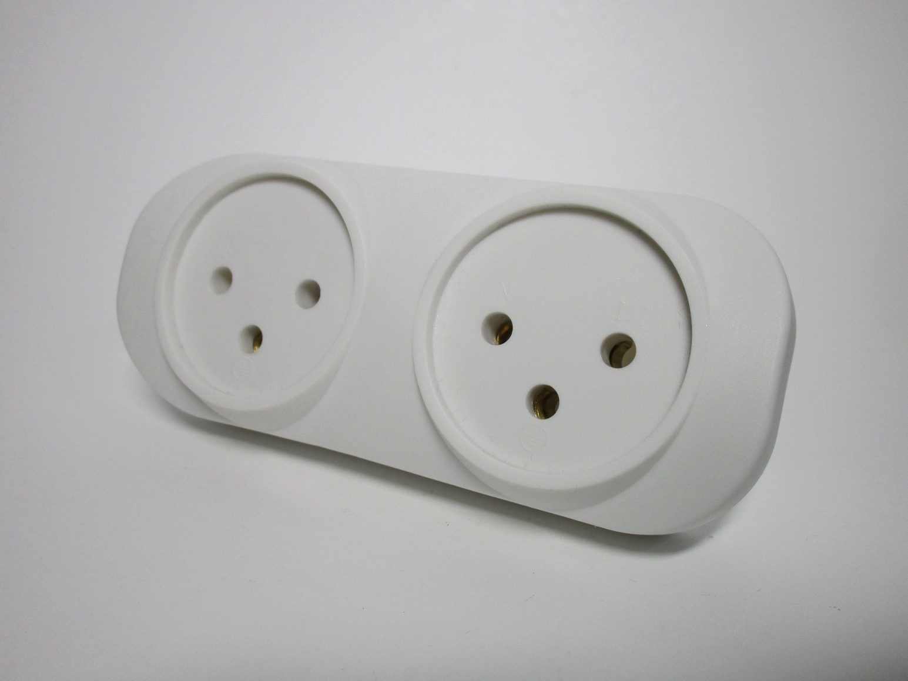
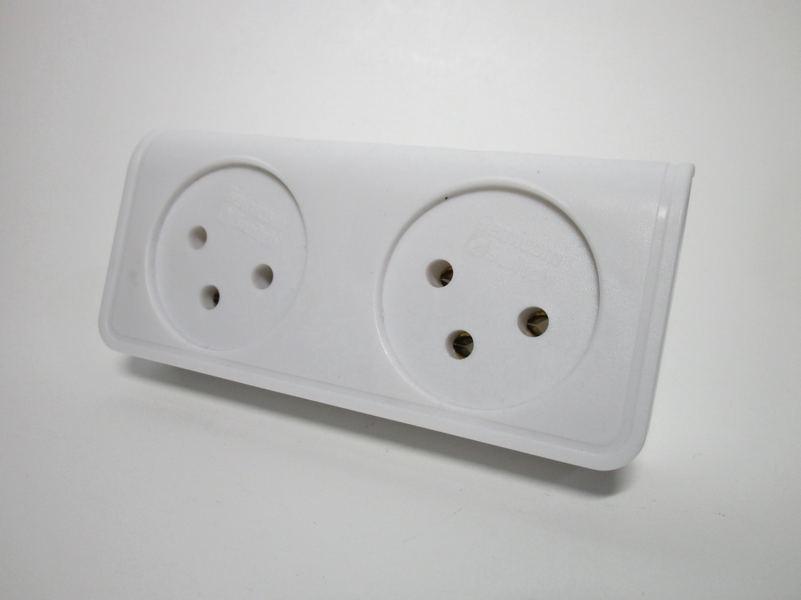
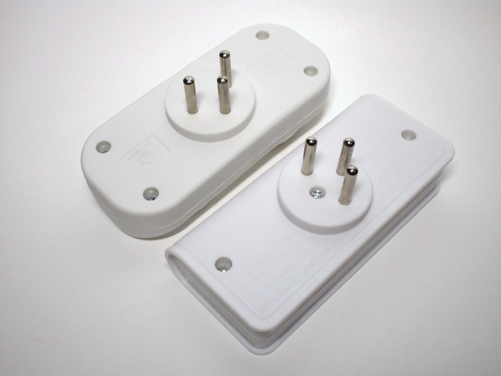

Other types of plugs and sockets
This page covers some different types of plugs and sockets meant for mains power, not present in the other sections.
Note: connectors meant for antennas or SELV (safety extra-low voltage) use are showcased in a separate page.
French 6A non-earthed plugs
Rating: 6A 250V
These unusual two-pin, non-earthed plugs are available in France for rewiring appliances. While they may initially look very similar to the Europlugs, just rated for 6A instead of 2.5A, there is a significant physical difference: the body of the plug is wider, which prevents it from fitting in Schuko and Swiss power sockets.
Plugs of this type seem to be a standard in France: matching sockets can be found on certain multiway adaptors, power strips and connector sockets. It's unclear why the physical incompatibility with other types of socket is present; rewireable plugs rated at 6A with the same shape as Europlugs do exist, don't suffer from the same limitations and some even have French certification markings.
Aside from the plug, there is also a matching socket, both made by the same company. The socket works with Europlugs, two-pin 6A French plugs and non-earthed 10A Italian ones. Unsurprisingly, the plug was bought at a hardware store in France - however the socket was obtained separately, at a hardware store in Slovenia, sold alongside rewireable Europlugs. Evidently the usefulness of the socket has made them attractive enough to be sold in other countries as well, likely to build or repair non-earthed extension cords.


French light fixture plugs (DCL)
Rating: 6A 250V
DCL (dispositif de connexion luminaires, device for connection of luminaires) plugs are special types of plugs and sockets for connecting ceiling light fixtures, replacing traditional hard-wired installations using terminal blocks. Their use is now mandatory in France and Norway for new or renovated houses.
The sockets have flat contacts, underneath a deep recess which hides the plug completely. They're also polarised and earthed. A hook is present to support the weight of the fixture; when installed properly, using a special type of wall box, it's possible to use lamps with a weight of up to 25kg, as also indicated on the socket.


DCL plugs are very small, as they're meant to not stick out from the ceiling after being plugged in. They have three very small flat pins, with a length of just 7mm, as well as a retaining clip which holds the plug in the socket.
Adaptors with a standard Edison lamp socket are available. These allow the electrical installation to be tested, and the room to be lit, before the house is fully furnished. Later on, the adaptor can be removed and replaced with a more pleasant-looking fixture; for this purpose, it is supplied from the factory with a DCL plug clipped to the side.


Israeli plugs and sockets
The SI32 (type H) plug standard is quite unique, being used only in Israel and the Gaza Strip. This standard has had a significant evolution over the years; old plugs and sockets used flat pins, in a Y configuration, and were initially rated at 10A. Later on, the standard was "upgraded" to 16A, but without any change in design of the plugs. This, reportedly, led to overheating when high-power appliances were used.
 To solve this problem new plugs were introduced, using round pins with a diameter of 4.5mm. Revised sockets, introduced in 1989,
have both flat and round holes, in order to accept both old and new plugs as well as Europlugs, which
are quite common.
To solve this problem new plugs were introduced, using round pins with a diameter of 4.5mm. Revised sockets, introduced in 1989,
have both flat and round holes, in order to accept both old and new plugs as well as Europlugs, which
are quite common.
The newest style of sockets have wider round holes so as to also accept earthed CEE 7/7 (Schuko) plugs, but without providing an earth connection. Aside from the earth hole, these sockets are very similar in style to the old European non-earthed ones.
Earthed power socket
Rating: 16A 250V
This is a newer style of socket, with the wider holes mentioned previously. It's built similarly to European-style ones and uses the same style of mounting, though unusually the frame is made of plastic rather than metal - likely because this is a very cheap model. Markings are present on the frame to indicate polarisation: line is on the right and neutral is on the left.
Safety is quite lacking with this socket: it doesn't feature any sort of safety shutters and only has a very shallow (around 1-2mm) recess. This makes it possible to accidentally touch the plug pins, which are rarely ever sleeved, and thus receive an electric shock.
{kind=link}
 

{kind=link}
Two-way adaptors
Rating: max 3500W, 250V
Multiway adaptors can be essential in older houses with few power sockets; these are two inexpensive examples of two-way ones, allowing for connection of two appliances. They're very similar to each other; the main differences between the two is that one has the plug rotated by 90°, as well as a slight angle to the sockets.
Neither of them have sleeved pins or safety shutters; however, both have a slight protrusion on the plug, in order to fit in sockets with a shallow recess like the one shown previously.
  {kind=link}
{kind=link}
{kind=link}